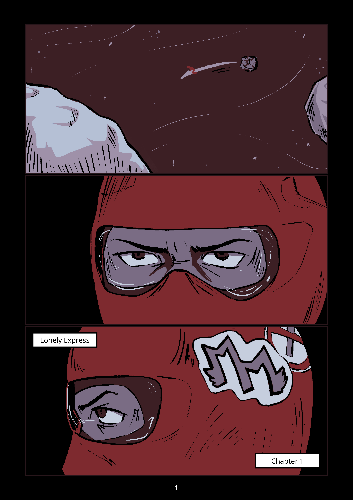
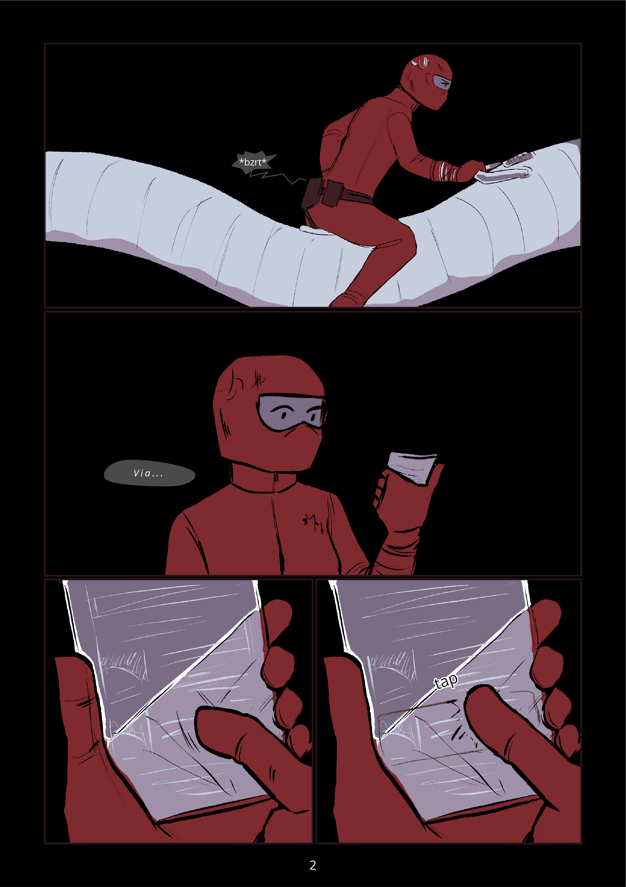
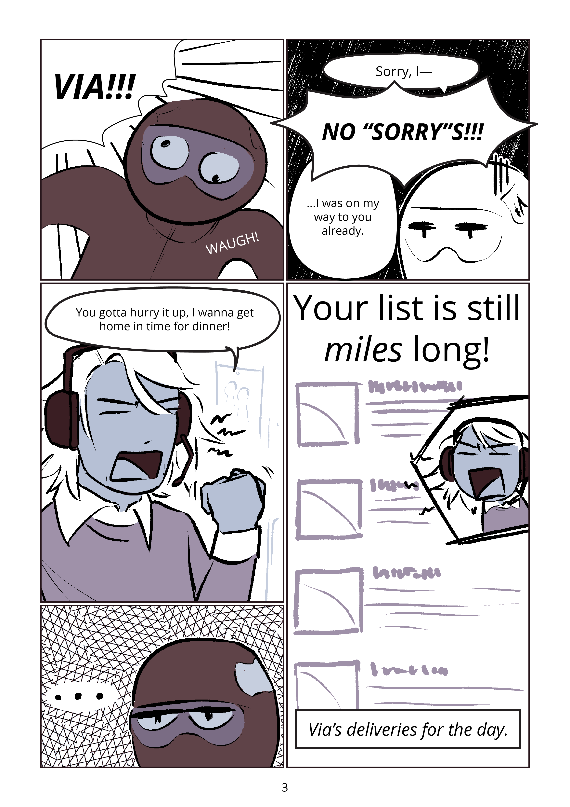

Lonely Express Chapter 1
Panel 1: A small red figure rides through space on a long ship, towing cargo. Asteroids are in the foreground, with stars in the background.
Panel 2: Closeup of a face wearing a red helmet, that reveals only the character's eyes. They have a stern expression.
Panel 3: The same closeup from a side angle. There is a sticker with two "M"s with small wings, and a no smoking sticker.

Panel 1: The person with the red spacesuit driving their long cylindrical vehical. Their radio crackles, unnoticed.
Panel 2: The person pulls out a small handheld screen. The text to their left says "Via..."
Panel 3 and 4: Closeup of the screen in their hands. They scroll in panel 3, then tap in panel 4, selecting something on the screen.

Panel 1: Someone shouts: "VIA!!!" through the crackling radio. The character in the red suit lets out a noise of surprise.
Panel 2: The character in the suit, named Via, talks through the radio, saying "Sorry, I—", and is cut off by the other person. "NO 'SORRY'S!!!". Via responds with "...I was on my way to you already." while making a tired expression.
Panel 3: The character on the other end of the radio is shown wearing a headset and a sweater, shaking their fist in annoyance. "You gotta hurry it up, I wanna get home in time for dinner!"
Panel 4: The character with the headset shouts again: "Your list is still miles long!". Their angry face is overlayed over a list of unclear items. The caption at the bottom says: "Via's deliveries for the day.".
Panel 5: Via makes an exhausted expression with her eyes, saying nothing.